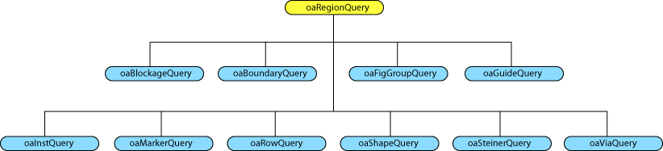

|
 |
 |
||||||
|
|
|
||||||
The OpenAccess plug-in interface uses programming techniques similar to those used in the Microsoft ® COM technology. The region query plug-in provides an interface that is easily updated or replaced. You can initialize the query tree plug-in structure by using the following API after the call to oaDesignInit() and before the call to oaBlock::initForRegionQuery():
void oaRegionQuery::init(const oaString &pluginName="oaRQSystem")
This loads the default region query plug in. OpenAccess provides a default region query plug in named “oaRQXYTree”. An oacRegionQueryFailedToGetPlugIn exception is thrown if the specified plug in fails to load.
An application can call the following function to get the name of the region query plug in currently in use. An empty string is returned if no plug in is loaded.
void oaRegionQuery::getPlugInName()
You can initialize region query structures for a block and all the blocks bound to it:
oaBlock::initForRegionQuery()
The initialization call is optional. OpenAccess will make this call internally when it receives the first query. This API has been made visible to the application so that the application can control when to perform the initialization, which can be time consuming.
Each query is specialized for each OpenAccess object type. The following figure shows the oaRegionQuery subclasses available for object queries.

There is a unique object for each type of query. Each of these objects implements its own query() and abort() functions. Each object also implements startRef() and endRef() functions to control hierarchy traversal.
Users must overload the query***() functions to get objects.
query<Object>() function to add the processing code. startRef() to be notified of the event or to set the return value to false if you want to skip the reference. Here is an example of a shape query class that is derived from the abstract oaShapeQuery class:
class myShapeQuery : public oaShapeQuery {
public:
myShapeQuery() {numShapes = 0;}
virtual void queryShape(oaShape *shape) {numShapes++;}
private:
oaUInt4 numShapes;
};
Return to Programmers Guide topics

Copyright © 2001-2010 Cadence Design Systems, Inc.
All rights reserved.